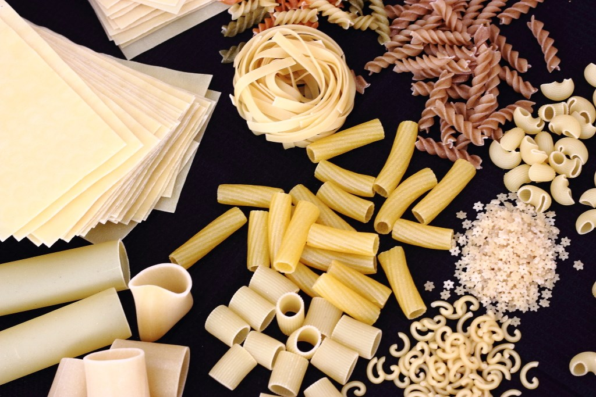

Pasta Artesanal
30 de Diciembre 2017
Oh mamma, quanto è buona la pasta! Junto con el pan la pasta es una de las cosas que más me gusta hacer. Hace ya casi 10 años que vivo en Italia y no me canso, literalmente, de prepararla y de comerla. Obviamente, aquí en Italia la pasta es una institución, no pasan más de dos días sin probarla. Como en mi casa cuando uno no sabía qué hacer y se preparaban patatas fritas con huevo, aquí en Italia la opción es siempre un plato de pasta, simple, con il pomodoro. Hacerla en casa requiere mucho menos tiempo del que podemos imaginar y si preparamos una buena cantidad es posible congelarla para tenerla, de este modo, siempre lista para cocinar.
Escriba un comentario:
Maria123: Que gran post aprendi mucho de la pasta artesanal.
Juan_F: Tengo una pregunta me gustaria saber en que temperatura podemos encontrar un equilibrio al dejar la pasta en reposo.
Chex_788: Me gusto mucho la forma como describes la preparacion de la pasta.